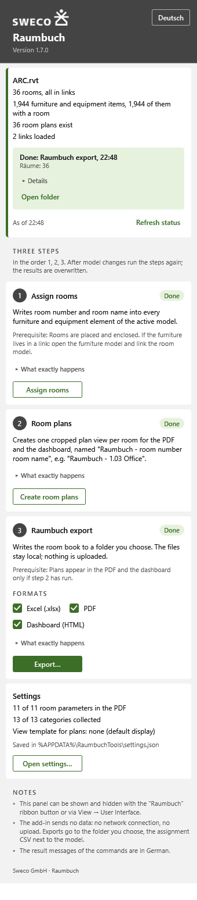

Raumbuch
One room book, two routes to it.
- C#
- Revit API
- React
- Vite
- FastAPI
- APS Viewer
- Model Derivative API
- web-ifc
- three.js
The problem
A room book lists every room and everything in it. Teams often assemble it by hand from the model, room by room, and start again when the design changes.
What it does
Revit add-in (Revit 2023 to 2027). Assigns every piece of furniture and equipment to the room it stands in, also across linked models, and writes the room number and name into shared parameters. It then creates one cropped plan per room and exports the room book as Excel, as a PDF with one page per room, and as an offline HTML dashboard. The three steps live in one docked panel, in German and English.
Web app. Signs in to Autodesk Construction Cloud, browses hubs, projects and folders across all APS regions, and opens a model in the APS Viewer with a plan panel beside the 3D view. Rooms come from the 3D scene, from the Model Derivative API, or from the 2D plan views when neither has them. Furniture from the main model and every linked model is placed in one coordinate system and matched to rooms by parameter, by position, or by the nearest room within 2 m.
Both export a formatted German Raumbuch to Excel, PDF and a single-file HTML dashboard whose charts double as filters.
Features
- Revit add-in for Revit 2023 to 2027, one docked panel with three steps and a highlighted next action, in German and English
- Assigns every piece of furniture and equipment to the room it stands in, also across linked models, and writes room number and name into shared parameters
- Creates one cropped floor plan per room, named by room number and name
- Exports the room book as Excel, as a PDF with a cover and one page per room with its plan and furniture, and as an offline HTML dashboard
- Settings choose the room parameters in the PDF, the furniture categories and the view template of the room plans
- Web app: Autodesk sign-in, hubs, projects and folders of all APS regions (US, EMEA, AUS) in one list
- Web app: APS Viewer with a plan panel; selecting a room tints its furniture and cuts it out with a section box
- Web app: rooms from the 3D scene, the Model Derivative API or the 2D plan views; furniture from the main model and every linked model in one coordinate system
- Furniture is matched to rooms by parameter, by position, or by the nearest room within 2 m; leftovers are listed separately
- Searchable room table with level separators, area totals and furniture grouped by category and type
- IFC files open in the browser without any login, several files form one federated model, nothing is uploaded
- Dashboard export: one offline HTML file with KPI tiles, charts that act as filters, a room table with plan images and CSV download
See it
Screenshots & demos

